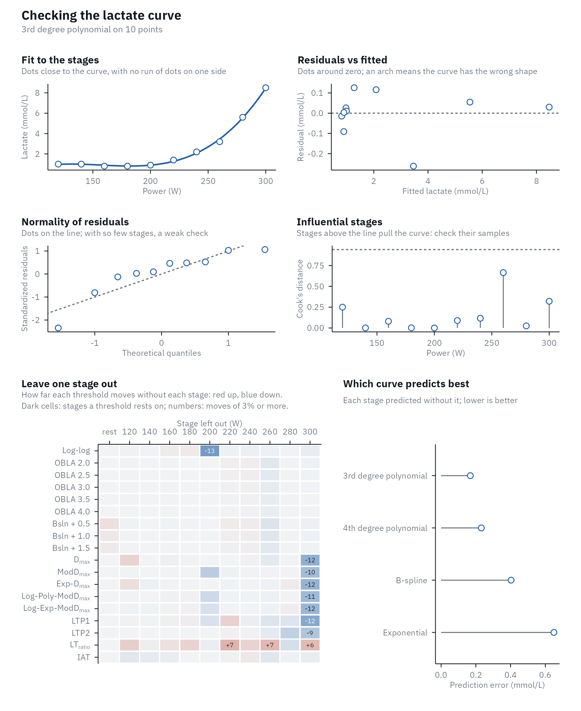
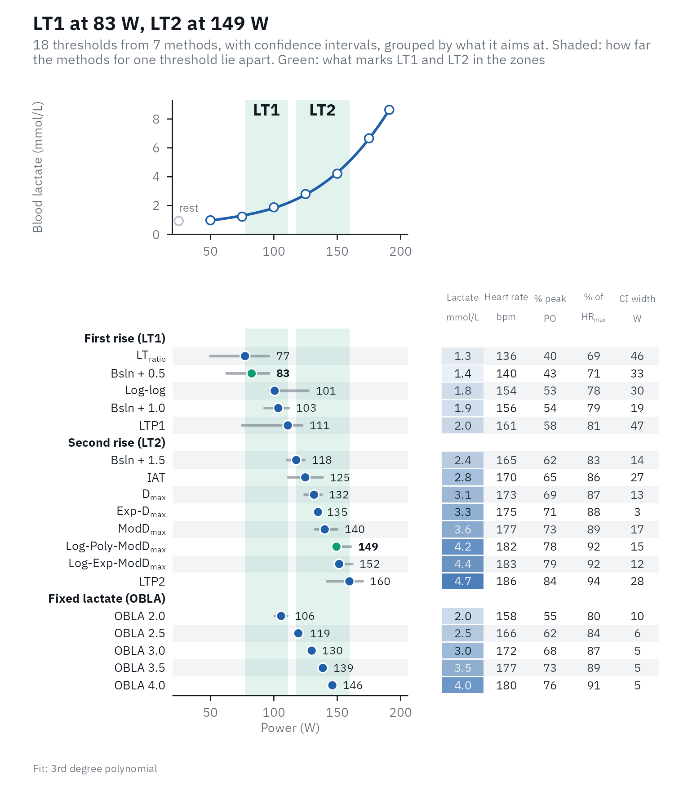

A step test gives 6 to 10 stages, each a lactate sample with an analyzer error of a few percent, and every threshold is read off a curve fitted to them. Before trusting a number, ask three questions:
- Is the test sound? A missing resting sample, a lactate dip, a last stage that was not completed.
- Does the curve follow the stages? Regression diagnostics, adapted to so few points.
- How sure is each threshold? How much it moves without one stage, and its bootstrap interval.
Is the test sound?
lactate_checks() lists what is easy to miss in a table
of numbers. The printed results say how many checks need attention.
library(lactater)
library(dplyr)
plateau <- tibble(
intensity = c(0, 100, 150, 200, 250, 300, 350, 400),
lactate = c(1.0, 1.1, 1.3, 2.0, 3.4, 5.2, 6.4, 6.4)
)
plateau_results <- lactate_threshold(plateau, intensity, lactate, plot = FALSE)
plateau_results
#> # Lactate thresholds: cycling, 3rd degree polynomial, 7 stages + rest
#> # LT1: 176 W (Bsln + 0.5)
#> # LT2: 182 W (Log-Poly-ModDmax)
#> # Checks: 2 warnings, see lactate_checks()
#> method_category method fitting intensity lactate
#> <fct> <fct> <chr> <dbl> <dbl>
#> 1 Log-log Log-log 3rd degree polynomial (us… 167 1.6
#> 2 OBLA OBLA 2.0 3rd degree polynomial (us… 198 2
#> 3 OBLA OBLA 2.5 3rd degree polynomial (us… 216 2.5
#> 4 OBLA OBLA 3.0 3rd degree polynomial (us… 232 3
#> 5 OBLA OBLA 3.5 3rd degree polynomial (us… 248 3.5
#> 6 OBLA OBLA 4.0 3rd degree polynomial (us… 263 4
#> 7 Bsln+ Bsln + 0.5 3rd degree polynomial (us… 176 1.5
#> 8 Bsln+ Bsln + 1.0 3rd degree polynomial (us… 198 2
#> 9 Bsln+ Bsln + 1.5 3rd degree polynomial (us… 216 2.5
#> 10 Dmax Dmax 3rd degree polynomial (de… 169 1.4
#> 11 Dmax ModDmax 3rd degree polynomial (de… 177 1.5
#> 12 Dmax Exp-Dmax Exponential (default) 253 3.7
#> 13 Dmax Log-Poly-ModDmax 3rd degree polynomial (de… 182 1.6
#> 14 Dmax Log-Exp-ModDmax Exponential (default) NA NA
#> 15 LTP LTP1 3rd degree polynomial (us… 185 1.4
#> 16 LTP LTP2 3rd degree polynomial (us… 340 6.4
#> 17 LTratio LTratio B-Spline (default) 156 1.4
#> 18 IAT IAT B-Spline (default) 234 2.9
lactate_checks(plateau_results)
#> 10 checks: 6 passed, 2 notes, 2 warnings
#> ℹ Stages 7 stages: the LTP fit has 6 parameters, so 1 degree of freedom is left and LTP can move a lot with one stage (at least 8 stages are better); the fitted curves rest on few points too.
#> ✔ Resting sample Present.
#> ⚠ Thresholds found Not found within the tested range: Log-Exp-ModDmax.
#> ✔ Edge of the range No threshold sits at the first or last stage.
#> ✔ Early lactate dip No early dip.
#> ℹ Final stage Lactate did not rise in the last stage (incomplete stage or plateau); consider `max_intensity`.
#> ✔ Peak lactate 6.4 mmol/L.
#> ✔ Sample type blood lactate.
#> ✔ LT1 Within 10% of peak (5 methods, LTratio 156 to Bsln + 1.0 198).
#> ⚠ LT2 43% of peak apart (7 methods, Dmax 169 to LTP2 340): the choice of LT2 decides the zones, so look at the overview before choosing.Here lactate did not rise in the last stage. If that stage was not completed, leave it out:
lactate_threshold(plateau, intensity, lactate, method = "Dmax", plot = FALSE, max_intensity = 350)
#> # Lactate thresholds: cycling, 3rd degree polynomial, 6 stages + rest
#> # LT2: 222 W (Log-Poly-ModDmax)
#> method_category method fitting intensity lactate
#> <fct> <fct> <chr> <dbl> <dbl>
#> 1 Dmax Dmax 3rd degree polynomial (def… 186 1.8
#> 2 Dmax ModDmax 3rd degree polynomial (def… 206 2.2
#> 3 Dmax Exp-Dmax Exponential (default) 238 3.1
#> 4 Dmax Log-Poly-ModDmax 3rd degree polynomial (def… 222 2.7
#> 5 Dmax Log-Exp-ModDmax Exponential (default) 265 3.8Does the curve follow the stages?
lactate_diagnostics() checks the fitted curve the way a
regression model is checked, with the adjustments that 6 to 10 points
need, and prints a summary. Here is a trained female cyclist from
lactate_tests:
female <- lactate_tests |>
filter(test == "cycling_female") |>
lactate_threshold(intensity, lactate, plot = FALSE)
diagnostics <- lactate_diagnostics(female)
diagnostics
#> Lactate curve: 3rd degree polynomial on 10 points; residual SD 0.14 mmol/L.
#> No stage has a Cook's distance above 0.94 (the median of F(4, 6)).
#> Most sensitive to single stages: Log-log (jackknife SE 12 W), Dmax (jackknife SE 12 W), LTP1 (jackknife SE 12 W).
#> Best-predicting curve: 3rd degree polynomial, which missed each stage by 0.17 mmol/L on average when fitted without it (root-mean-square leave-one-out error).
autoplot(diagnostics)
Each panel answers one question, and its subtitle says what to look for.
Fit to the stages. The curve with the measured stages, and a dashed line from each stage to the curve (the residual). Look for runs of stages on the same side of the curve, not for single stages a little off it: with an analyzer error of 2 to 4% (Bonaventura et al., 2015), a residual of 0.1 to 0.2 mmol/L is expected.
Residuals vs fitted. The residuals against the fitted lactate. They should scatter around zero with no pattern. An arch (positive at both ends and negative in the middle, or the reverse) means the shape of the curve is wrong for this test: an exponential, for example, cannot follow stages that stay flat or dip at the start. A fan that widens to the right is expected, because analyzer error grows with lactate (Bonaventura et al., 2015).
Normality of residuals. The standardized residuals (each residual divided by its standard error) against the values a normal distribution would give. They should follow the line. With 6 to 10 points, no test can tell much: in a simulation of cubic fits to 6, 8 and 10 stages, a Shapiro-Wilk test rejected normality in under 2% of runs, even when the errors were heavy-tailed or skewed (code below). A check that “passes” means “could not tell”, not “fine”. Look for one point far from the others instead.
Influential stages. How much each stage pulls the curve, as Cook’s distance: how far all the fitted values would move if that stage were left out (Cook, 1977). Two things are special with so few stages:
- The first and last stages always have a high leverage (the potential to pull the curve), by design: leverage depends only on where the stages are along the intensity axis, and the ends have no neighbors on one side. For a cubic on 10 stages, the end stages here have a leverage of 0.82 and the inner ones 0.24 to 0.33. Because the curve bends towards a high-leverage stage, its residual looks small exactly when it matters most, which is why Cook’s distance combines the residual with the leverage.
- The usual cut-offs fail. The rule “leverage above 2p/n” (p, the number of curve terms; Hoaglin & Welsch, 1978) gives 2 x 4 / 8 = 1 for a cubic on 8 stages, a value leverage can never exceed, so it flags nothing. lactater flags a stage when its Cook’s distance is above the median of the F(p, n - p) distribution, which adapts to n and p (Cook, 1977).
Leave one stage out. Every threshold computed again
without each stage in turn (a jackknife; Efron, 1982). A grid
has one row per method and one column per stage left out, red where the
threshold rises without that stage and blue where it falls, darker the
further it moves, with the move written where it is 3% of the threshold
or more, about the day-to-day variation of a threshold (Heuberger et al.,
2018). A pale row means the threshold does not rest on any single
stage; a dark cell names the stage it rests on; a dark column is a stage
that many thresholds rest on, which is worth a second look at its
sample. Dropping the first or last stage changes where the
Dmax line starts or ends, so dark cells there are expected
for the Dmax family. The jackknife standard error,
sqrt((n - 1) / n * sum((theta_i - mean(theta_i))^2)),
summarizes the spread for each method:
diagnostics$jackknife |>
arrange(desc(jackknife_se)) |>
slice_head(n = 5)
#> # A tibble: 5 × 5
#> method intensity lowest highest jackknife_se
#> <chr> <dbl> <dbl> <dbl> <dbl>
#> 1 Log-log 199. 186. 201. 12.0
#> 2 Dmax 231. 219. 236. 12.0
#> 3 LTP1 208. 196. 212. 11.8
#> 4 Exp-Dmax 242. 230. 245. 11.3
#> 5 Log-Exp-ModDmax 260. 248. 261. 11.1Which curve predicts best. Each stage predicted by the curve fitted without it. The printed summary gives the prediction error of the best curve: the root-mean-square difference, in mmol/L, between each measured stage and its prediction from the curve fitted without it. More on this below.
When one stage drives the curve
In this trained cyclist, lactate falls after the first stage, probably after a hard warm-up:
dip <- lactate_tests |>
filter(test == "cycling_early_dip") |>
lactate_threshold(intensity, lactate, plot = FALSE)
dip_diagnostics <- lactate_diagnostics(dip)
dip_diagnostics
#> Lactate curve: 3rd degree polynomial on 8 points; residual SD 0.09 mmol/L.
#> Influential stage(s): 120 W (Cook's distance 4.90), 400 W (Cook's distance 1.07).
#> Most sensitive to single stages: LTP1 (jackknife SE 71 W), Log-log (jackknife SE 43 W), LTP2 (jackknife SE 40 W).
#> Best-predicting curve: 3rd degree polynomial, which missed each stage by 0.19 mmol/L on average when fitted without it (root-mean-square leave-one-out error).The first stage has a Cook’s distance of 4.9, five times the cut-off: it pulls the fitted curve. Without it, Log-log moves by 34 W, while OBLA 2.0, read off the curve higher up, barely moves:
dip_diagnostics$leave_one_out |>
filter(method %in% c("Log-log", "OBLA 2.0"), stage == 120)
#> # A tibble: 2 × 4
#> method stage intensity change
#> <chr> <dbl> <dbl> <dbl>
#> 1 Log-log 120 272. 33.6
#> 2 OBLA 2.0 120 291. -0.206That does not make the stage wrong: the dip is real physiology, and deleting a measurement to get a nicer curve is not a check. It means that the first-rise thresholds of this test should be read with care, and that the next test needs a lighter warm-up. The summary also names LTP1 as the most sensitive threshold, for another reason: with 8 stages, each of the three straight segments of LTP holds only a few stages, and leaving out the 320 W stage moves LTP1 by 69 W:
dip_diagnostics$leave_one_out |>
filter(method == "LTP1")
#> # A tibble: 9 × 4
#> method stage intensity change
#> <chr> <dbl> <dbl> <dbl>
#> 1 LTP1 0 259. 0
#> 2 LTP1 120 264. 5.34
#> 3 LTP1 160 259. 0.264
#> 4 LTP1 200 263. 3.50
#> 5 LTP1 240 247. -12.0
#> 6 LTP1 280 221. -38.5
#> 7 LTP1 320 190. -68.6
#> 8 LTP1 360 210. -49.6
#> 9 LTP1 400 210. -49.6Which curve?
lactate_fit_quality() fits every curve to the same
points. A curve with more parameters always follows the points more
closely, so the RMSE (the typical distance between the curve and the
stages) always favors it. The prediction error does not: each stage is
predicted by the curve fitted without it (leave-one-out
cross-validation), which punishes a curve that bends to follow single
points.
The elite rider in lactate_tests shows the
difference:
elite <- lactate_tests |>
filter(test == "cycling_elite") |>
lactate_threshold(intensity, lactate, plot = FALSE)
lactate_fit_quality(elite) |>
select(fit, parameters, rmse, prediction_error)
#> # A tibble: 4 × 4
#> fit parameters rmse prediction_error
#> <chr> <int> <dbl> <dbl>
#> 1 3rd degree polynomial 4 0.172 0.410
#> 2 4th degree polynomial 5 0.137 0.733
#> 3 B-spline 5 0.0424 0.534
#> 4 Exponential 3 0.264 1.29The B-spline follows the stages most closely (the lowest RMSE), but predicts a left-out stage worse than the 3rd degree polynomial: it follows the noise as well as the curve. The runner is the opposite case: the polynomial cannot follow the flat first stages, and the spline and 4th degree polynomial predict better.
runner <- lactate_tests |>
filter(test == "running") |>
lactate_threshold(intensity, lactate, sport = "running", plot = FALSE)
lactate_fit_quality(runner) |>
select(fit, parameters, rmse, prediction_error)
#> # A tibble: 4 × 4
#> fit parameters rmse prediction_error
#> <chr> <int> <dbl> <dbl>
#> 1 3rd degree polynomial 4 0.159 0.543
#> 2 4th degree polynomial 5 0.0863 0.261
#> 3 B-spline 5 0.0615 0.256
#> 4 Exponential 3 0.162 0.582Choose the curve before you look at the thresholds, use the prediction error as a guide rather than a rule, and keep the same curve between tests of the same athlete. Some methods fix their curve anyway: Exp-Dmax and Log-Exp-ModDmax use the exponential, LTratio and IAT the B-spline, and Log-log and LTP the measured stages.
How sure is a threshold?
The jackknife shows how much a threshold rests on single stages.
ci = TRUE asks a different question: how much does it move
with the scatter of this test? Every replicate keeps the fitted curve
and gives each stage its own residual with a random sign, a wild
bootstrap (Wu,
1986; Davidson &
Flachaire, 2008), because the error of a lactate sample grows with
its concentration. The residuals are widened for the few degrees of
freedom a step test leaves, and every method is run again. The interval
is the middle 95% of the replicate thresholds. The overview plot draws
it as a line on each row.
set.seed(1)
with_ci <- demo_data |>
lactate_threshold(intensity, lactate, heart_rate, plot = FALSE, ci = TRUE, n_boot = 300)
with_ci |>
select(method, intensity, intensity_low, intensity_high)
#> Warning: Unknown or uninitialised column: `method_category`.
#> # Lactate thresholds: cycling, 3rd degree polynomial, 7 stages + rest
#> # LT1: 83 W (Bsln + 0.5)
#> # LT2: 149 W (Log-Poly-ModDmax)
#> method intensity intensity_low intensity_high
#> <fct> <dbl> <dbl> <dbl>
#> 1 Log-log 101 96 128
#> 2 OBLA 2.0 106 100 111
#> 3 OBLA 2.5 119 116 123
#> 4 OBLA 3.0 130 127 133
#> 5 OBLA 3.5 139 136 142
#> 6 OBLA 4.0 146 143 149
#> 7 Bsln + 0.5 83 62 97
#> 8 Bsln + 1.0 103 92 112
#> 9 Bsln + 1.5 118 110 125
#> 10 Dmax 132 124 138
#> 11 ModDmax 140 132 150
#> 12 Exp-Dmax 135 133 137
#> 13 Log-Poly-ModDmax 149 145 161
#> 14 Log-Exp-ModDmax 152 149 162
#> 15 LTP1 111 75 123
#> 16 LTP2 160 142 171
#> 17 LTratio 77 50 97
#> 18 IAT 125 111 139
autoplot(with_ci)
Thresholds read off the fitted curve at a fixed concentration (OBLA) move little. Breakpoint methods (Log-log, LTP) move a lot, because a breakpoint between two stages can jump to the neighboring interval.
An interval need not be centered on its threshold. It is the middle
95% of the replicates, not the threshold plus or minus a standard error,
so it keeps the shape of their spread. Here Log-log is 101 W with an
interval of 96 to 128 W, because in some replicates its breakpoint jumps
to the next stage up; LTratio, at 77 W, reaches down to 50 W,
because the lactate / intensity ratio is nearly flat around its minimum;
OBLA 3.0 sits in the middle of its narrow interval. A lopsided interval
says in which direction a threshold is fragile. The intervals cover the
scatter of the samples only: not errors that are the same in every
sample, such as analyzer bias or the sampling site, nor the day-to-day
variation of the athlete, which is larger (see
compare_tests()).
How often, then, does a 95% interval hold the true threshold? A
simulation of 150 tests of 8 stages from a known curve
(data-raw/bootstrap_coverage.R in the package source)
answers it. With an analyzer error of 0.1 mmol/L plus 4%, the interval
held the true threshold in 93% of tests for Bsln + 1.0, 94% for
Exp-Dmax and 84% for OBLA 4.0; with a constant error of 0.25
mmol/L, in 93%, 97% and 91%. OBLA falls short because a 3rd degree
polynomial cannot follow the true curve exactly, and the interval does
not include that error of about 1.5 W. An ordinary residual bootstrap,
which moves the residuals between stages, did worse: 67% for OBLA 4.0
and 81% for Exp-Dmax with the error that grows with
lactate.
The simulation of normality tests
The code behind the “under 2%” above (4,000 runs per cell; takes a few seconds)
set.seed(1)
rejected <- function(n, errors, runs = 4000) {
x <- seq_len(n)
truth <- 1 + 0.05 * exp(0.6 * x)
mean(replicate(runs, {
y <- truth + 0.3 * errors(n)
stats::shapiro.test(stats::rstandard(stats::lm(y ~ poly(x, 3))))$p.value < 0.05
}))
}
error_types <- list(normal = rnorm, heavy_tailed = function(n) rt(n, 3), skewed = function(n) rexp(n) - 1)
tidyr::expand_grid(errors = names(error_types), stages = c(6, 8, 10)) |>
mutate(rejected = purrr::map2_dbl(errors, stages, \(e, n) rejected(n, error_types[[e]]))) |>
tidyr::pivot_wider(names_from = errors, values_from = rejected)References
Bonaventura JM, Sharpe K, Knight E, Fuller KL, Tanner RK, Gore CJ. Reliability and accuracy of six hand-held blood lactate analysers. J Sports Sci Med. 2015;14:203-14. PMCID:PMC4306774
Cook RD. Detection of influential observation in linear regression. Technometrics. 1977;19(1):15-8. doi:10.2307/1268249
Davidson R, Flachaire E. The wild bootstrap, tamed at last. Journal of Econometrics. 2008;146(1):162-9. doi:10.1016/j.jeconom.2008.08.003
Efron B. The Jackknife, the Bootstrap and Other Resampling Plans. Philadelphia: SIAM; 1982. doi:10.1137/1.9781611970319
Heuberger JAAC, Gal P, Stuurman FE, de Muinck Keizer WAS, Mejia Miranda Y, Cohen AF. Repeatability and predictive value of lactate threshold concepts in endurance sports. PLOS ONE. 2018;13(11):e0206846. doi:10.1371/journal.pone.0206846
Hoaglin DC, Welsch RE. The hat matrix in regression and ANOVA. Am Stat. 1978;32(1):17-22. doi:10.1080/00031305.1978.10479237
Wu CFJ. Jackknife, bootstrap and other resampling methods in regression analysis. Ann Stat. 1986;14(4):1261-95. doi:10.1214/aos/1176350142